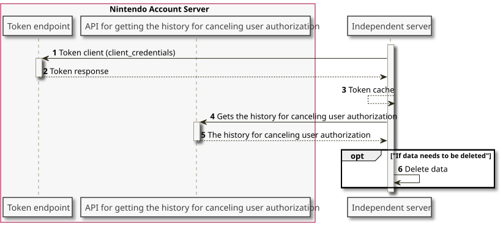

This page describes requirements and recommendations for applications when linking with Nintendo Accounts. Make sure that applications comply with the requirements.
Requirements
Do Not Save Client IDs and Client Secrets in the Switch Application
Switch applications do not need to use client IDs or client secrets during a Switch application's authentication sequence. See 4.5 Authentication and Authorization Sequence. Because of the security issues, it is prohibited to save client IDs or client secrets within a Switch application. It is also prohibited not only to embed client IDs and client secrets within the code of a Switch application but also for Switch applications to get that data from a network.
For more information, see Nintendo Switch Guidelines > Communication features > Independent servers > 0190: Prohibition of using a Nintendo Switch application to handle client IDs or client secrets used to link external services with Nintendo Accounts.
Executing Authorization Requests in the Web Applet Is Prohibited
Use the nn::account API to execute authorization requests from Switch applications. Using the web applet to execute authorization requests is prohibited. Operation is not assured when you execute authorization requests from the web applet, and might not produce the expected behavior.
For more information, see Nintendo Switch Guidelines > Communication features > Independent servers > 0191: Prohibition of using the web applet to perform authorization requests for Nintendo Accounts.
Comply With the Nintendo Account Presentation Rules
When you are indicating the Nintendo Account, comply with the information in 4.3 Presentation of the Nintendo Account.
Avoid Specifications Where the Application Cannot Progress If User Authorization Is Not Obtained
There is an option for linking Nintendo Accounts, and user agreement is required for the application to use the Nintendo Account information. If the user does not authorize linking a Nintendo Account, or cancels their authorization after agreeing, it should not then be impossible to advance in the application.
The phrase "impossible to advance" refers to situations where the user gets stuck in an infinite loop (unable to escape a screen or with the same screen shown repeatedly) until the user agrees, or the application crashes. It is all right to simply return to the previous scene or otherwise not let users use services that require Nintendo Account linking if the user cancels their authorization.
Aside from users canceling their authorization, there are situations where Nintendo might stop providing the authorization service to an application if the application does not comply with requirements, or for operational reasons.
Recommendations
Delete Data Based on the User Canceling Authorization
If a user authorizes Nintendo Account linking and then later cancels the authorization, you might need to delete any obtained user data. Use 4.7.5 API for getting the history for canceling user authorization to get the history of canceled authorizations. Use this API to get the authorization cancellation history and provide support that complies with legal requirements. Check with the company's legal department for the specific data that needs to be deleted and details about the legal requirements that need to be satisfied.
To use this API, you need to get an access token in advance. Use the following procedure.

| Number | Description | ||||||||||||||||
|---|---|---|---|---|---|---|---|---|---|---|---|---|---|---|---|---|---|
| 1-3 |
Get an access token by making a 4.7.2 Token Requests to the Nintendo Account server with the following request parameters. Request Parameters
If the token request is successful, a token with the following properties is obtained.
Cache and use the obtained access token while it is valid. |
||||||||||||||||
| 4-6 |
Specify the applicable period and run the 4.7.5 API for getting the history for canceling user authorization to get a list of identifiers for Nintendo Accounts for which authorization was canceled during that period. As needed, take measures such as deleting data. |
CONFIDENTIAL